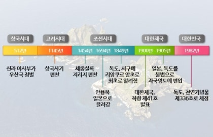
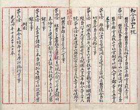

"대한민국 국민의 독도에 대한 역사관은 깊고 복잡한 주제입니다. 독도는 한국의 영토로서의 주장과 일본의 영토로서의 주장 사이의 갈등이 있는 지역입니다. 대한민국 국민의 입장에서는 독도가 한국의 일부로서의 역사적인 연속성과 중요성을 갖고 있다고 봅니다.
한국 국민들은 독도가 고대부터 한국의 영토로 인식되어 왔다고 주장합니다. 역사적인 기록과 지리적 위치, 그리고 관련 문서들을 근거로 이를 뒷받침합니다. 한국인들은 독도에 대한 주권을 지켜야 한다고 강력하게 주장하며, 국민 간에 독도에 대한 애정과 자부심이 깊습니다.
이에 반해, 일본은 독도를 "Takeshima"라고 불러 독도의 일본 소속을 주장하고 있습니다. 두 나라 간의 이러한 역사적, 정치적 갈등은 국제 사회에서도 주목받고 있습니다.
대한민국 국민들은 독도에 대한 역사적인 이해를 높이고, 국가적 자긍심을 키우기 위해 다양한 방법으로 독도에 대한 정보를 홍보하고, 교육에 활용하며, 국제 사회에 주장하는 등의 노력을 기울이고 있습니다.
독도의 역사

독도가 대한민국의 영토인 국제법적 근거
대한제국 칙령 제41호(1900년): 대한제국 시절, 1900년에 공포된 칙령 제41호에 따르면 독도는 울도군의 관할 구역으로 명시되어 있습니다.
연합국 최고사령부 각서 제677호(SCAPIN-677, 1946년): 제2차 세계대전 후 일본의 영토를 정리하는 과정에서, 독도는 일본의 영토에서 제외되었고, 한국의 영토로 명확히 규정되었습니다.
샌프란시스코 강화조약(1951년): 이 조약은 일본이 제2차 세계대전 후 포기해야 할 영토를 명시하고 있는데, 이 조약의 해석과 관련된 여러 문서들에서 독도가 한국의 영토임을 시사하고 있습니다.
